¿Para qué sirve la instrumentación geotécnica?
¿Cómo se define la pertinencia de la instrumentación geotécnica?
¿Cómo se interpretan los datos obtenidos de los instrumentos geotécnicos?
¿Qué papel juega la instrumentación geotécnica en la prevención de desastres?
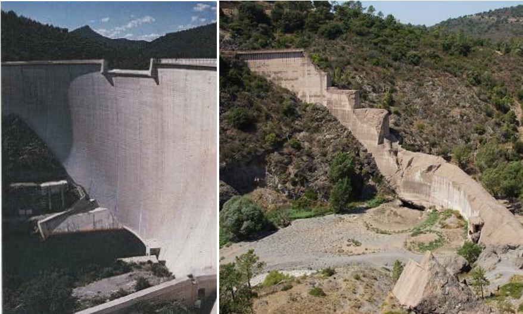
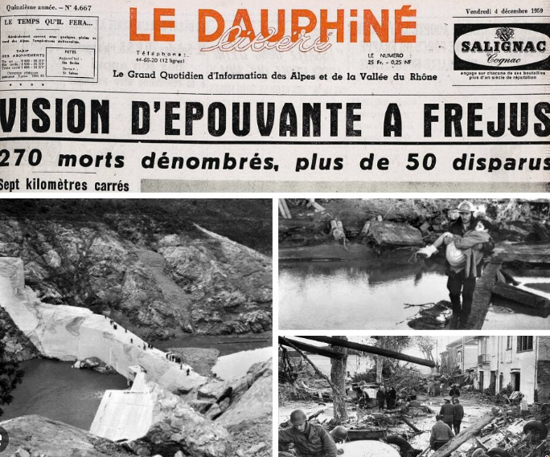
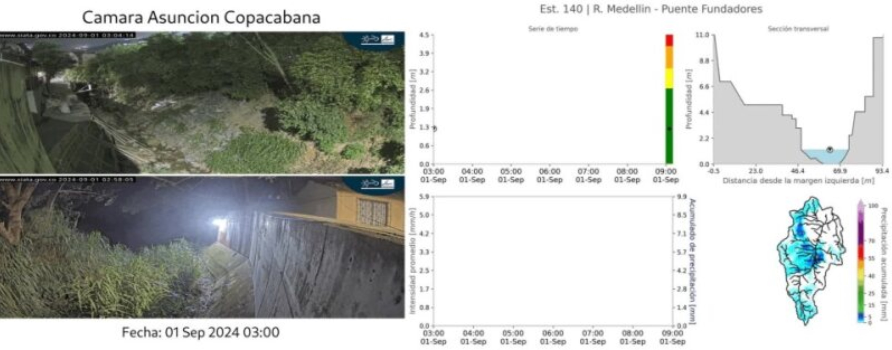
Tomado de SIATA
Tomado de la Revista Infraestructura y Desarrollo, Cámara Colombiana de la Infraestructura, edición No. 96 (nov 2020 – feb 2021).
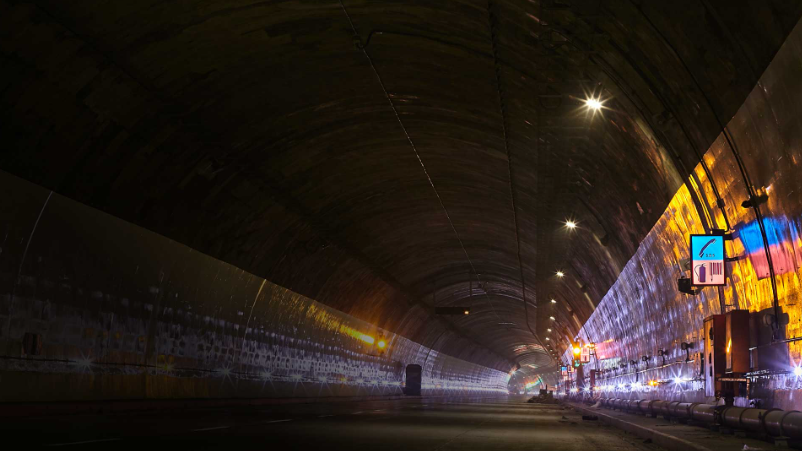
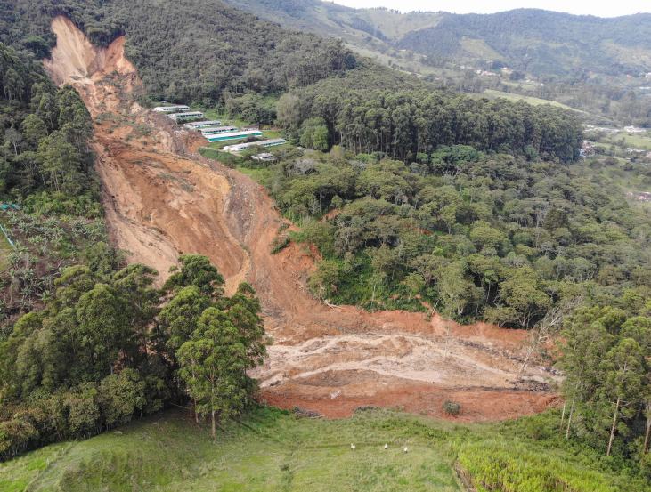
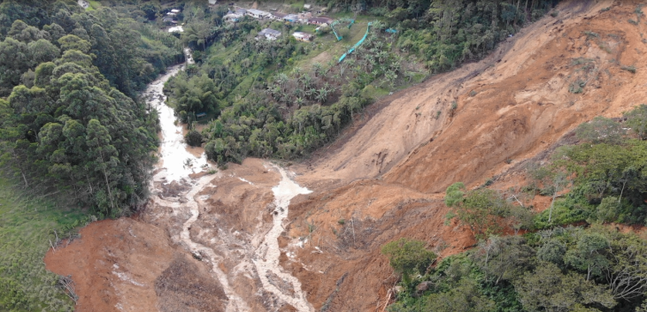
Cambios en la forma, posición o inclinación de una estructura o del terreno.
Descenso vertical del terreno o de una estructura debido a la compresión del suelo o la consolidación.
El exceso puede reducir la resistencia del suelo. Aplica para deslizamientos, cimentaciones, túneles y presas.
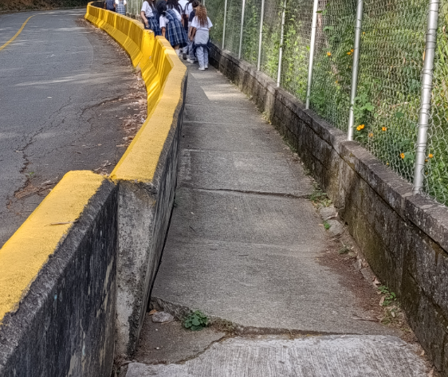
Fuerzas a las que están sometidos los componentes de una estructura (vigas, pilotes, anclajes).
Principalmente variables meteorológicas: por ejemplo, cantidad de lluvia o agua fluyendo sobre o bajo el terreno.
Escala regional y de grandes unidades geológicas.
Por ejemplo, estabilidad de taludes, laderas y estructuras de cimentación.
Muestras de laboratorio típicamente de 7 × 15 cm.
Estructura intergranular, microfábrica y enlaces minerales.
Imágenes Tomadas de Curso A. Lloret (UPC)
Visión global de cuencas, formaciones y macizos.
Caben todo tipo de estructuras y/o proyectos.
Imágenes Tomadas de Curso A. Lloret (UPC)
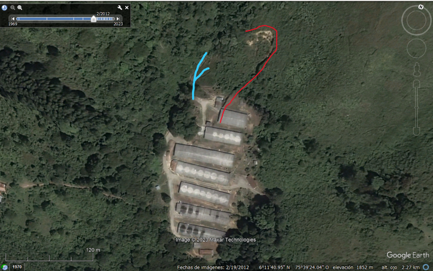
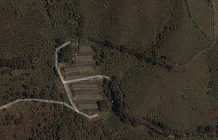
Fuente: Google Earth
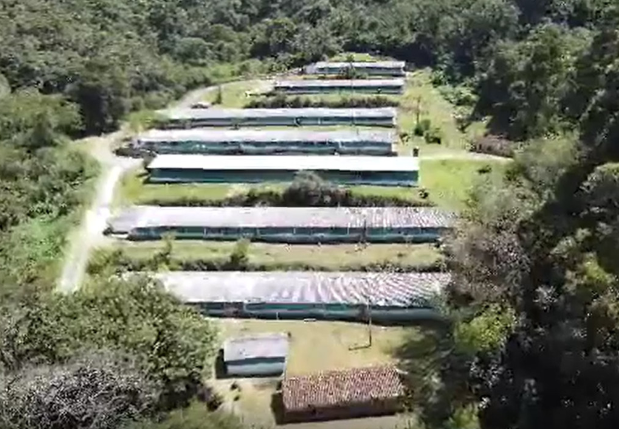
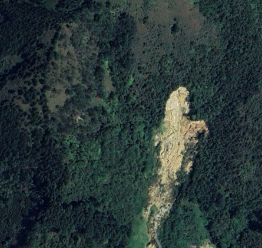
A continuación: variables hidrometeorológicas y su relación con las fallas geotécnicas.